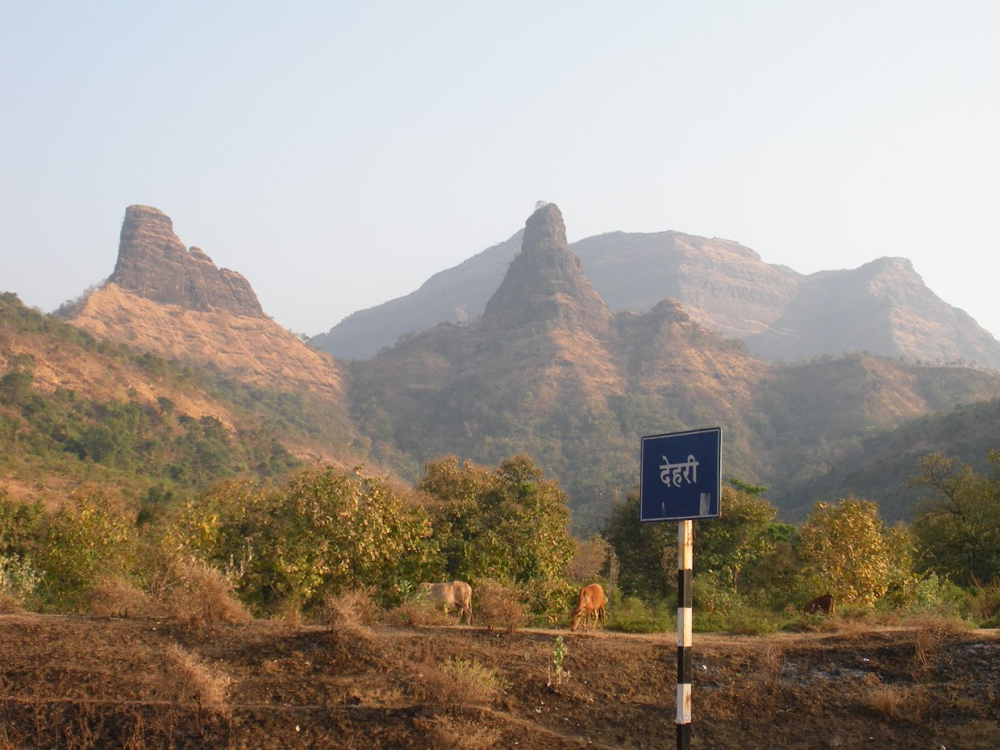

माचिंद्रगड किल्ला
Location : Click Here For Google Map
- माहिती
- माचिंद्रगड किल्ला महाराष्ट्र राज्याच्या पुणे जिल्ह्यात स्थित एक ऐतिहासिक किल्ला आहे. हा किल्ला पुणे शहरापासून अंदाजे ५० किमी अंतरावर स्थित आहे. किल्ल्याचे संरचनात्मक बांधकाम अत्यंत मजबूत आणि आकर्षक आहे. माचिंद्रगड किल्ल्याचा इतिहास मराठा साम्राज्याच्या काळात महत्त्वपूर्ण होता, आणि याचा वापर सामरिक दृष्टिकोनातून मोठ्या प्रमाणावर केला जात होता. किल्ल्यावरून त्या काळाच्या संरक्षणात्मक पद्धतींचा उत्तम उदाहरण दिसून येतो.
किल्ल्याची रचना बुरुज, भिंती, किल्ल्याच्या दरवाजे आणि एक विशेष शिखर यांचा समावेश करते. किल्ल्यावरून संपूर्ण परिसराचे सुंदर दृश्य दिसते, जे पर्यटकांसाठी एक विस्मयकारक अनुभव ठरते. किल्ल्याच्या आसपास असलेल्या हिरव्या डोंगर रांगा आणि डोंगराच्या शिखरावरून दिसणारी निसर्गाची सौंदर्यशाली दृश्ये पर्यटकांना आकर्षित करतात.
माचिंद्रगड किल्ला आजकाल एक महत्त्वाचे पर्यटन स्थळ बनले आहे. किल्ल्यावर चढाई करतांना पर्यटक निसर्गाच्या सान्निध्यात अद्भुत दृश्यांचा आनंद घेतात. किल्ल्याच्या ऐतिहासिक आणि निसर्ग सौंदर्यामुळे पर्यटक येथे मोठ्या संख्येने येतात.
Explore the historical beauty
